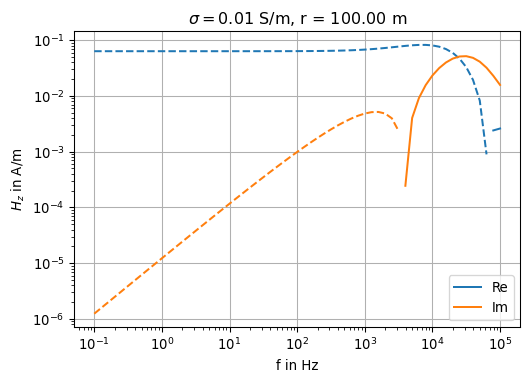

<>:4: SyntaxWarning:
invalid escape sequence '\('
<>:4: SyntaxWarning:
invalid escape sequence '\)'
<>:4: SyntaxWarning:
invalid escape sequence '\('
<>:4: SyntaxWarning:
invalid escape sequence '\)'
/var/folders/bn/mf0vkwhn31x6n25gc0bk005r0000gn/T/ipykernel_98231/1576674515.py:4: SyntaxWarning:
invalid escape sequence '\('
/var/folders/bn/mf0vkwhn31x6n25gc0bk005r0000gn/T/ipykernel_98231/1576674515.py:4: SyntaxWarning:
invalid escape sequence '\)'
12 Dipole sources above a layered halfspace
We consider a vertical magnetic dipole (VMD) over a layered halfspace.
12.1 The layered halfspace model
The halfspace is partitioned into \(N\) horizontal, uniform plates of infinite extent. The layer with index \(1\) is the uppermost layer, often referred to as overburden. The layer with index \(N\) (the substratum, sometimes called basement) extends vertically to \(+\infty\). In the case of a uniform halfspace, \(N=1\).
The interfaces between the layers are at \(z=h_n\) where \(1 \le n \le N\). The surface of the conducting Earth is at \(z=h_1 = 0\).
The thickness of layer \(n\) is \(d_n = h_{n+1} - h_n\).
The conductivities are denoted as \(\sigma_n\), \(1 \le n \le N\).
Note that the \(N\)-layered halfspace is composed of \(2N-1\) parameters, i.e., \(N\) conductivities and \(N-1\) thicknesses.

We are going to derive expressions for the fields at \(-\infty < z < +\infty\). The resulting expressions will be similar to those derived for the case of a uniform halfspace.
We take the following steps to solve the problem:
First, we formulate a boundary value problem for the potential inside the layer with index \(n\), \(1 \le n \le N\), and extend its solution upwards to the layer denoted \(n-1\) by applying appropriate conditions of continuity of the fields and the potential.
In what follows, we only consider that part of the solution of the Helmholtz equation depending on \(z\), i.e., \(V(z, \lambda)\).
Inside the layer with index \(n\) we define the function \(\lambda_n = \lambda_n(\lambda) = \sqrt{\lambda^2 + i\omega\mu_0 \sigma_n}\).
We assume that there are both upward and downward travelling waves arising from reflections at the discontinuities (jumps) of the electrical conductivity between adjacent uniform layers.
Let the function \[ \begin{equation} \begin{aligned} V(z, \lambda) &=\gamma_{n}^{-}(\lambda) e^{-\lambda_{n}\left(z-h_{n}\right)}+\gamma_{n}^{+}(\lambda) e^{+\lambda_{n}\left(z-h_{n}\right)} \\ &=\gamma_{n}^{-}\left[e^{-\lambda_{n}\left(z-h_{n}\right)}+ \textcolor{red}{r_{n}} e^{+\lambda_{n}\left(z-h_{n}\right)}\right] \end{aligned} \end{equation} \] be the solution to the Helmholtz equation \[ \begin{equation} V''(z) = \lambda_n^2 V(z) \end{equation} \] for \(h_n < z < h_{n+1}\).
Note that \(\textcolor{red}{r_n} := \dfrac{\gamma_n^+}{\gamma_n^-}\) is the ratio of the amplitudes of upward (reflected) and downward (transmitted) travelling waves at the interface at \(z=h_n\).
Note
If the magnetic permeability is non-uniform with depth, i.e., \(\mu = \mu(z)\), then we may replace \(\lambda_n\) by \(\eta_n = \sqrt{\lambda^2 + i\omega\mu_n \sigma_n}/ \mu_n\).
12.2 Recursion
Let’s first analyze the wave propagation in the infinite layer \(N\).
There only exists a downward propagating (outgoing) wave with \[ \begin{equation} V(z, \lambda)=\gamma_{N}^{-}(\lambda) e^{-\lambda_{N}\left(z-h_{N}\right)}, \qquad z \gt h_{N}. \end{equation} \] This is in complete agreement with the uniform case, where \(N=1\), \(h_N = 0\), and therefore \(\gamma_{N}^{-}(\lambda) = \gamma^{-}(\lambda)\).
The important question is:
How does a jump of conductivity \(\sigma_{n+1} - \sigma_n \ne 0\) in the plane \(z=h_{n+1}\) affect the propagation of the partial waves \(V(z, \lambda)\)?
To answer this question, knowledge about the behaviour of field components (or the potential) is required.
We already know that the potential and its vertical derivative are continuous in \(z=0\). In the case of a layered halfspace, this can be extended to any plane \(z=h_n\), \(1 \le n \le N\).
The continuity still holds for the function \[ \begin{equation} B(z, \lambda)=-\frac{V^{\prime}(z, \lambda)}{V(z, \lambda)} \end{equation} \] i.e., the assumption of continuity is also valid for the ratio of the two continuous functions \(V^\prime\) and \(V\) for any value of \(\lambda\).
Of particular interest is the evaluation of \(B(z)\) at the interface between two adjacent layers.
To this end, we define the interface admittance \(B_n\) of the wave by setting \[ \begin{equation} B_{n}:=B\left(h_{n}\right)=-\frac{V^{\prime}\left(h_{n}\right)}{V\left(h_{n}\right)} \end{equation} \]
For EM applications operating on and above the Earth’s surface, the surface admittance \(B_1\) evaluated in \(z=h_1 = 0\) is most important.
Later we will introduce the surface impedance \(Z_1\), with the help of which we infer other quantities such as the apparent resistivity and phase.
Summary
- We have formulated an ansatz for \(V(z)\) in any layer
- This ansatz can be interpreted as the linear combination of upward and downward propagating partial waves with exponential decay inside the layer and fixed interface amplitudes at the adjacent interfaces
- The two coefficient functions \(\gamma_n^+\) and \(\gamma_n^-\) for the \(n\)-th layer are still to be determined
- To this end, we enforce conditions of continuity at those interfaces
In the following we introduce auxiliary functions like the reflection coefficient function \(r_n(\lambda)\).
12.2.1 Behaviour of \(V(z)\) in layer \(N\)
With \(r_n\) we describe the ratio of upward and downward travelling partial waves.
In \(z=h_N\) we don’t observe an upward travelling wave, i.e., there is no reflection arising from an interface below \(z=h_N\).
Therefore, \(r_N(\lambda) = 0\) in \(z=h_N\) for all \(\lambda\).
The layer \(N\), also called the substratum, acts like a homogeneous halfspace.
12.3 Implementation
In the following we derive the computation of \(B_1\) using sympy.
First, we define a few symbolic variables.
λₙ: wave number in layer \(n\)γ⁻,γ⁺: coefficient functions in layer \(n\)Bₙ₊₁: admittance evaluated at \(z=h_{n+1}\)rₙ: reflection coefficient at \(z=h_n\)dₙ: thickness of layer \(n\)hₙ: \(z\)-coordinate at the top of layer \(n\)
Show the code
z, r_n, d_n = symbols("z r_n d_n", real=True)
h_n = symbols("h_n", real=True, positive=True)
lambda_n, B_np1, gamma_minus, gamma_plus = symbols("lambda_n B_{n+1} gamma^- gamma^+")Further, we define V(z) as a symbolic expression for \(V(z)\):
Show the code
V = lambda z: gamma_minus * (exp(-lambda_n * (z - h_n)) + r_n * exp(lambda_n * (z - h_n)))
print_latex('V(z) =')
V(z)
\(V(z) =\)
\(\displaystyle \gamma^{-} \left(r_{n} e^{\lambda_{n} \left(- h_{n} + z\right)} + e^{- \lambda_{n} \left(- h_{n} + z\right)}\right)\)
B(z) is the implementation of the admittance function \(B(z)\):
Show the code
B = lambda z: -diff(V(z), z) / V(z)
print_latex('B(z) = ')
B(z).simplify()
\(B(z) = \)
\(\displaystyle \frac{\lambda_{n} \left(- r_{n} + e^{2 \lambda_{n} \left(h_{n} - z\right)}\right)}{r_{n} + e^{2 \lambda_{n} \left(h_{n} - z\right)}}\)
B_n is the interface admittance at the top of layer \(n\):
Show the code
B_n = B(z).subs(z, h_n).simplify()
print_latex("B_n = ")
B_n
\(B_n = \)
\(\displaystyle \frac{\lambda_{n} \left(1 - r_{n}\right)}{r_{n} + 1}\)
We observe that \[ \begin{equation} B_{n}=\lambda_{n} \frac{1-r_{n}}{1+r_{n}}. \end{equation} \tag{12.1}\] We now have a representation of the interface admittance in terms of the layer properties \(\lambda_n\) and the reflection coefficient \(r_n\).
However, the \(r_n\) remains undetermined. We try to eliminate \(r_n\) from the equation above.
To this end, we express \(B(z)\) at \(z=h_{n+1}\) using the layer thickness \(d_n\).
Show the code
B(z).subs(z - h_n, d_n).simplify()\(\displaystyle \frac{\lambda_{n} \left(- r_{n} e^{2 d_{n} \lambda_{n}} + 1\right)}{r_{n} e^{2 d_{n} \lambda_{n}} + 1}\)
We rewrite the result and obtain \[ \begin{equation} B_{n+1}=\lambda_{n} \frac{1-r_{n} e^{2 \lambda_{n} d_{n}}}{1+r_{n} e^{2 \lambda_{n} d_{n}}}. \end{equation} \]
Now we have found a second equation which contains \(r_n\), which we eliminate in the following step.
We rearrange the equation and bring \(r_n\) to the left.
With the help of sympy we carry out the following steps:
- Evaluate \(B(z)\) in \(z=h_{n+1}\) by
- Substitute (
subs) \(h_{n+1} - h_n\) by \(d_n\) - Solve (
solve) the equation for \(r_n\) - Save the result as
rinsympy
Thus, we have found an expression which introduces a link to the layer \(n+1\), and enables us to eliminate \(r_n\).
Show the code
r = solve(B(z).subs(z - h_n, d_n) - B_np1, r_n)
display(HTML("\(r_n = \)"))
r[0]<>:2: SyntaxWarning:
invalid escape sequence '\('
<>:2: SyntaxWarning:
invalid escape sequence '\('
/var/folders/bn/mf0vkwhn31x6n25gc0bk005r0000gn/T/ipykernel_98231/3563047273.py:2: SyntaxWarning:
invalid escape sequence '\('
\(r_n = \)
\(\displaystyle \frac{\left(- B_{n+1} + \lambda_{n}\right) e^{- 2 d_{n} \lambda_{n}}}{B_{n+1} + \lambda_{n}}\)
Given this intermediate result, we are now prepared to substitute the expression \(r_n\) in equation 12.1.
We have obtained an important, yet unfinished, intermediate result, which already contains a recursion \[ B_n \leftarrow B_{n+1} \qquad\text{for } n= N-1, N-2, \dots, 1. \]
Show the code
display(HTML("\( B_n = \)"))
B_n.subs(r_n, r[0]).simplify().simplify()<>:1: SyntaxWarning:
invalid escape sequence '\('
<>:1: SyntaxWarning:
invalid escape sequence '\('
/var/folders/bn/mf0vkwhn31x6n25gc0bk005r0000gn/T/ipykernel_98231/2603916505.py:1: SyntaxWarning:
invalid escape sequence '\('
\( B_n = \)
\(\displaystyle \frac{\lambda_{n} \left(B_{n+1} - \lambda_{n} + \left(B_{n+1} + \lambda_{n}\right) e^{2 d_{n} \lambda_{n}}\right)}{- B_{n+1} + \lambda_{n} + \left(B_{n+1} + \lambda_{n}\right) e^{2 d_{n} \lambda_{n}}}\)
With the following changes we obtain a recursion formula which provides the desired surface admittance \(B_1\):
- Expand with \((\lambda_n + B_{n+1})e^{+\lambda_n d_n}\)
- Collect, sort and factor out \(\lambda_n\) and \(B_{n+1}\) in both numerator and denominator
- Use definitions of hyperbolic functions \(\sinh(z)\) and \(\cosh(z)\)
- Expand with \(1 / \cosh(z)\)
We use \[ \begin{equation} \tanh z=\frac{e^{z}-e^{-z}}{e^{z}+e^{-z}} \end{equation} \] and \[ \begin{equation} {{\cosh z} \atop {\sinh z}} = \frac{1}{2}\left( e^z \pm e^{-z} \right),\qquad z \in \mathbb C, \end{equation} \] and obtain the recursion formula for the admittance at the surface of the Earth:
Wait algorithm for \(\mu_r = 1\)
\[ \begin{equation} \begin{array}{l} \lambda_{n}=\sqrt{\lambda^{2}-k_{n}^{2}}, \qquad n=1,2, \ldots, N \\ B_{N}=\lambda_{N} \\ B_{n}=\lambda_{n} \dfrac{B_{n+1}+\lambda_{n} \tanh \left(\lambda_{n} d_{n}\right)}{\lambda_{n}+B_{n+1} \tanh \left(\lambda_{n} d_{n}\right)}, \qquad n=N-1, \ldots, 1 \end{array} \end{equation} \] This algorithm is known as the Wait algorithm (Wait, J.R., 1954: On the relation between telluric currents and the Earth’s magnetic field, Geophysics, 19, 281-289) PDF
If we let \(\mu_r \ne 1\) in any of the \(N\) layers, we slightly modify the above equations and write
Wait algorithm incorporating \(\mu_r \ne 1\)
\[ \begin{equation} \begin{array}{l} \eta_{n}=\dfrac{\sqrt{\lambda^2 + i\omega\mu_n \sigma_n}}{\mu_n} \qquad n=1,2,\ldots, N \\ \mu_n = \mu_{r,n} \mu_0 \\ B_{N}=\eta_{N} \\ B_{n}=\eta_{n} \dfrac{B_{n+1}+\eta_{n} \tanh \left(\lambda_{n} d_{n}\right)}{\eta_{n}+B_{n+1} \tanh \left(\lambda_{n} d_{n}\right)}, \qquad n=N-1, \ldots, 1. \end{array} \end{equation} \]
12.4 Algorithm
We implement the calculation of the admittance as a function called admittance(λ, σ, μ, d, f). The function returns \(B_1\) as a complex-valued number.
The input parameters for an \(n\)-layered halfspace are:
- separation variable \(\lambda\), \(0 \le \lambda < \infty\)
- array of layer conductivities \(\sigma_i\), \(i=1,\dots n\)
- array of layer magnetic permeabilities \(\mu_i = \mu_{ri} \mu_0\), \(i=1,\dots n\)
- array of layer thicknesses \(d_i\), \(i=1,\dots,n-1\)
- frequency in Hz.
Show the code
def admittance(λ, σ, μ, d, f):
nl = len(σ)
ω = 2 * np.pi * f
α = [np.sqrt(λ**2 + 1j * μ[i] * ω * σ[i]) for i in range(nl)]
η = [a / m for a, m in zip(α, μ)]
B = np.zeros(nl, dtype=np.complex128)
B[nl - 1] = η[nl - 1]
if nl > 1:
for n in range(nl - 2, -1, -1):
B[n] = η[n] * \
(B[n + 1] + η[n] * np.tanh(α[n] * d[n])) / \
(η[n] + B[n + 1] * np.tanh(α[n] * d[n]))
return B[0]For \(\lambda = 10\) m\(^{-1}\), \(\sigma=[1, 1]^\top\) S/m, \(\mu=[\mu_0, \mu_0]^\top\) Vs/Am, \(d=1\) m, \(f=1\) Hz we obtain for \(B_1\):
Show the code
print('B_1 = ')
admittance(10.0, np.array([1, 1]), np.array([1, 1]), np.array([1]), 1.0)B_1 = np.complex128(10.004928726718877+0.31400450112152684j)12.5 Summary
We are now able to express the anomalous effect of the layers \(2 \le n \le N\) by the surface admittance \(B_1\).
The resulting admittance formula can be used to simply replace every occurence of \(\lambda_1\) in the equations for the homogeneous halfspace by \(B_1\).
Fields in \(z \le 0\)
\[ \begin{align} E_\varphi & = -\frac{i \omega \mu m}{4 \pi} \left[ \frac{r}{R^3} + \int_0^\infty \frac{\lambda - B_1}{\lambda + B_1}\lambda e^{-\lambda h}e^{\lambda z}J_1(\lambda r)\, \dd\lambda \right] \\ H_r & = \frac{m}{4 \pi} \left[ \frac{3r(z+h)}{R^5} - \int_0^\infty \frac{\lambda - B_1}{\lambda + B_1}\lambda^2 e^{-\lambda h}e^{\lambda z}J_1(\lambda r)\, \dd\lambda \right] \\ H_z & = \frac{m}{4 \pi} \left[ \frac{3(z+h)^2 - R^2}{R^5} + \int_0^\infty \frac{\lambda - B_1}{\lambda + B_1}\lambda^2 e^{-\lambda h}e^{\lambda z}J_0(\lambda r)\, \dd\lambda \right] \end{align} \]
Finally, it remains to evaluate the Hankel integrals numerically.
To this end, we need an implementation of a discrete convolution. We use the function convolve:
Show the code
def convolve(fc, kernel, style="valid"):
nc = len(fc)
nu = len(kernel)
n = nu + nc - 1
result = np.zeros(n, dtype=type(kernel))
for i in range(nc):
for j in range(nu):
result[j + i] += kernel[j] * fc[i]
if style == "full":
result = result
elif style == "valid":
result = result[nc - 1:n - nc + 1]
return resultHere we define the function gethankelfcJ0 that returns the numerical filter coeffients for the function \(J_0(\lambda r)\) fc, the length of the filter nc as well the index which corresponds with the zero position, nc0.
Show the code
import numpy as np
def gethankelfcJ0():
fc = np.array([
+2.898782880000e-07, +3.649351440000e-07, +4.594261260000e-07, +5.783832260000e-07,
+7.281413380000e-07, +9.166756390000e-07, +1.154026250000e-06, +1.452832980000e-06,
+1.829008340000e-06, +2.302585110000e-06, +2.898782860000e-06, +3.649351480000e-06,
+4.594261190000e-06, +5.783832360000e-06, +7.281413220000e-06, +9.166756640000e-06,
+1.154026210000e-05, +1.452833050000e-05, +1.829008240000e-05, +2.302585270000e-05,
+2.898782590000e-05, +3.649351860000e-05, +4.594260510000e-05, +5.783833290000e-05,
+7.281411440000e-05, +9.166758820000e-05, +1.154025730000e-04, +1.452833540000e-04,
+1.829006940000e-04, +2.302586300000e-04, +2.898778910000e-04, +3.649353620000e-04,
+4.594249600000e-04, +5.783834370000e-04, +7.281377380000e-04, +9.166748280000e-04,
+1.154014530000e-03, +1.452825610000e-03, +1.828968260000e-03, +2.302545350000e-03,
+2.898639790000e-03, +3.649167030000e-03, +4.593733080000e-03, +5.783032380000e-03,
+7.279414970000e-03, +9.163407050000e-03, +1.153256910000e-02, +1.451458320000e-02,
+1.826011990000e-02, +2.297010420000e-02, +2.887026190000e-02, +3.626918100000e-02,
+4.547940310000e-02, +5.694081920000e-02, +7.098730720000e-02, +8.809954260000e-02,
+1.082238890000e-01, +1.312504830000e-01, +1.550557150000e-01, +1.763715060000e-01,
+1.856277380000e-01, +1.697780440000e-01, +1.034052450000e-01, -3.025832330000e-02,
-2.275743930000e-01, -3.621732170000e-01, -2.055004460000e-01, +3.373948730000e-01,
+3.176898970000e-01, -5.137621600000e-01, +3.091302640000e-01, -1.267575920000e-01,
+4.619678900000e-02, -1.809686740000e-02, +8.354260500000e-03, -4.473683040000e-03,
+2.619747830000e-03, -1.601713570000e-03, +9.977178820000e-04, -6.262758150000e-04,
+3.943388180000e-04, -2.486063540000e-04, +1.568086040000e-04, -9.892662880000e-05,
+6.241523980000e-05, -3.938053930000e-05, +2.484723580000e-05, -1.567749450000e-05,
+9.891817410000e-06, -6.241311600000e-06, +3.938000580000e-06, -2.484710180000e-06,
+1.567746090000e-06, -9.891808960000e-07, +6.241309480000e-07, -3.938000050000e-07,
+2.484710050000e-07, -1.567746050000e-07, +9.891808880000e-08, -6.241309460000e-08
])
nc = 100
nc0 = 60
return fc, nc, nc0We illustrate the filter coefficients associated with \(J_0(\lambda r)\):
Show the code
import matplotlib.pyplot as plt
fc0, nc, nc0 = gethankelfcJ0()
fig, ax = plt.subplots(1, 1, figsize=(6,4))
ax.plot([-nc0 + v for v in range(1, nc+1)], fc0)
ax.set_xlabel('index of coefficients')
ax.grid(True)
Show the code
def pos(data):
"""Return positive data; set negative data to NaN."""
return np.where(data > 0, data, np.nan)Show the code
rmin = 10.0
nr = 21
ncnr = nc + nr -1
rr = np.zeros(nr)
R = np.zeros(nr)
z = 0.0
z0 = 0.0
q = 10.0**0.1
mu0 = np.pi * 4e-7
sigma = np.array([0.01])
mu = np.array([1]) * mu0
for n in range(0, nr):
rr[n] = rmin * q**(n)
R[n] = np.sqrt(rr[n]**2 + (z - z0)**2)
nf = 61
freq = np.logspace(-1, 5, nf, endpoint=True)
kernel = np.zeros(ncnr, dtype=np.complex128)
Bz = np.zeros((nr, nf), dtype=np.complex128)
Bz0 = (3 * (z - z0)**2 - R**2) / R**5
for k, f in enumerate(freq):
omega = 2 * np.pi * f
for nu in range(0, ncnr):
n = nc0 - nc + nu
lam = np.exp(-n * 0.1 * np.log(10.0)) / rmin
B1 = admittance(lam, sigma, mu, [], f)
E = np.exp(-lam * np.abs(z + z0))
eta = lam / mu0
gamma = (B1 - eta) / (B1 + eta) * E
kernel[nu] = gamma * lam**2
Bz[:, k] = mu0 / 4 / np.pi * (Bz0 - convolve(fc0, kernel) / rr)
fig, ax = plt.subplots(1, 1, figsize=(6,4))
ax.loglog(freq, pos(np.real(Bz[10, :])) / mu0, color='C0', linestyle='-', label='Re')
ax.loglog(freq, pos(-np.real(Bz[10, :])) / mu0, color='C0', linestyle='--')
ax.loglog(freq, pos(np.imag(Bz[10, :])) / mu0, color='C1', linestyle='-', label='Im')
ax.loglog(freq, pos(-np.imag(Bz[10, :])) / mu0, color='C1', linestyle='--')
ax.grid(True)
ax.legend()
ax.set_xlabel('f in Hz')
ax.set_ylabel(r'$H_z$ in A/m')
ax.set_title(r'$\sigma = $' + str(sigma[0]) + ' S/m, r = ' + '{0:.2f}'.format(rr[10]) + ' m')
axShow the code
def Hz_analytical(r, f, sigma):
mu0 = np.pi * 4e-7
k = np.sqrt(-1j * 2 * np.pi * f * mu0 * sigma)
B = 9 - (9 + 9 * 1j * k * r - 4 * k**2 * r**2 - 1j * k**3 * r**3) * np.exp(-1j * k * r)
B = B / (2 * np.pi * k**2 * r**5)
return BShow the code
H = [Hz_analytical(100.0, v, 0.01) for v in freq]
fig, ax = plt.subplots(1, 1, figsize=(6,4))
ax.loglog(freq, pos(np.real(H)) / mu0, color='C0', linestyle='-', label='Re')
ax.loglog(freq, pos(-np.real(H)) / mu0, color='C0', linestyle='--')
ax.loglog(freq, pos(np.imag(H)) / mu0, color='C1', linestyle='-', label='Im')
ax.loglog(freq, pos(-np.imag(H)) / mu0, color='C1', linestyle='--')
ax.grid(True)
ax.legend()
ax.set_xlabel('f in Hz')
ax.set_ylabel(r'$H_z$ in A/m')
ax.set_title(r'$\sigma = $' + str(sigma[0]) + ' S/m, r = ' + '{0:.2f}'.format(rr[10]) + ' m')
ax


As we can see from visual inspection of all three illustrations given above, the Fast Hankel Transform approach works well.
Note
It remains to be said, that the numerical evaluation of the convolution is an expensive bottleneck, when the fields have to be computed at different \(z\) levels.